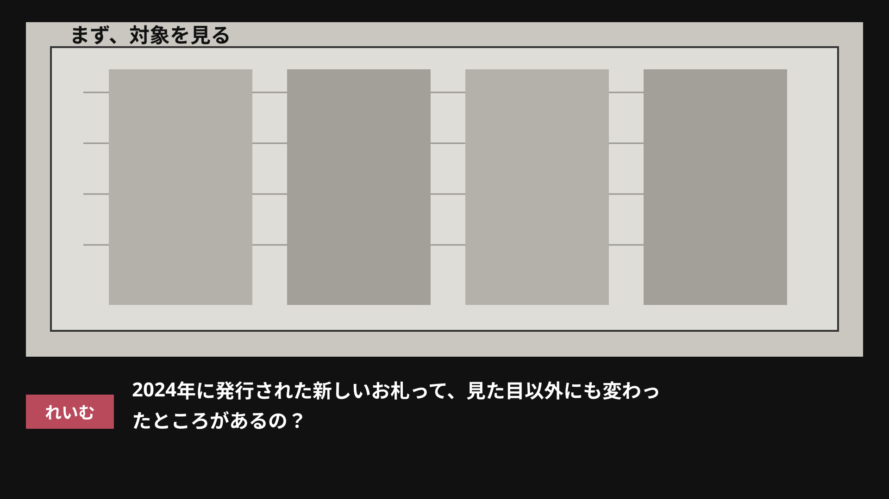

1 / 9

参照レイアウト・トレース
| trace | source | cohort | inspected surface | shared grammar |
|---|---|---|---|---|
| T-O01 | O01 | official_educational | multi-state hologram image / 3Dで見る偽造防止技術 | SG01_OBJECT_DOMINANCE / SG02_BOUNDED_FEATURE_FOCUS / SG05_SHORT_KEY_ADJACENCY |
| T-O02 | O02 | official_educational | annotated note overview / 1．偽造防止技術 | SG01_OBJECT_DOMINANCE / SG02_BOUNDED_FEATURE_FOCUS / SG05_SHORT_KEY_ADJACENCY |
| T-J03 | J03 | journalism_documentary | studio explainer preview frame / presenter plus numbered three-point board | SG02_BOUNDED_FEATURE_FOCUS / SG04_EDGE_SPEAKER_CUE / SG05_SHORT_KEY_ADJACENCY |
| T-J05 | J05 | journalism_documentary | broadcast opening frame / three object specimens plus lower-third | SG01_OBJECT_DOMINANCE / SG03_BOTTOM_SUBTITLE_BAND |
| T-Y01 | Y01 | yukkuri_adjacent_explainer | 00:30.003 decoded frame / ATM background and dialogue | SG03_BOTTOM_SUBTITLE_BAND / SG04_EDGE_SPEAKER_CUE |
| T-Y02 | Y02 | yukkuri_adjacent_explainer | 00:30.011 decoded frame / six-image object grid and lower subtitle | SG01_OBJECT_DOMINANCE / SG03_BOTTOM_SUBTITLE_BAND / SG04_EDGE_SPEAKER_CUE |
構成判断の系譜
| decision | structure | trace | classification |
|---|---|---|---|
| D01 | dominant object field | T-O01 / T-O02 / T-J05 / T-Y02 | trace_supported |
| D02 | one bounded feature focus | T-O01 / T-O02 / T-J03 | trace_supported |
| D03 | bottom subtitle band | T-J05 / T-Y01 / T-Y02 | trace_supported |
| D04 | small edge speaker nameplate instead of character art | T-J03 / T-Y01 / T-Y02 | content_lock_requirement |
| D05 | short key term adjacent to focus | T-O02 / T-J03 / T-Y01 | trace_supported |
| D06 | source-specific imagery and branding excluded | T-O01 / T-J05 | rights_requirement |
| D07 | neutral grayscale contrast without a theme | neutral glue | neutral_glue |
| D08 | straight full-frame geometry without outer cards | T-O02 / T-Y01 | trace_supported |
| D09 | rectangular production filmstrip | T-J03 / T-J05 | platform_geometry |
| D10 | detail crop replaces abstract dashboard widgets | T-O01 / T-Y02 | trace_supported |